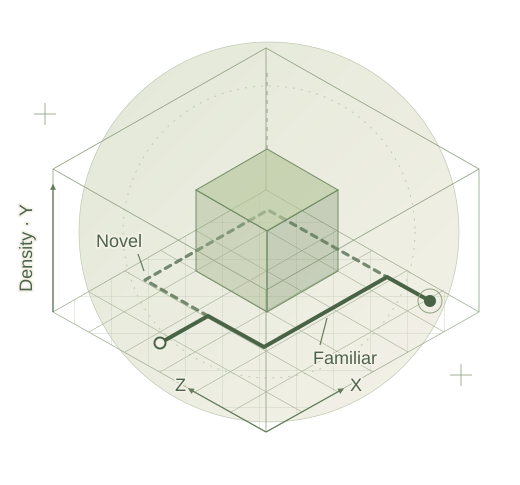

Spatial cognition
How do we find our way through familiar and unfamiliar places? I use fMRI and virtual environments to study how the brain supports navigation and how we imagine moving through space.
Cognition · Neuroimaging · VR
I’m a PhD student at the University of Arizona. I use fMRI and VR to study spatial cognition and sensory processing.

How do we find our way through familiar and unfamiliar places? I use fMRI and virtual environments to study how the brain supports navigation and how we imagine moving through space.
I study how people respond to sensory information in virtual environments, including cybersickness. My work has also examined sensory processing in autistic and neurotypical youth.
Master’s project ()
Differentiating Hippocampal Contributions to Mental Simulation and Spatial Navigation in Familiar and Novel Environments
Robbins, A. L., Preciado, C., & Demopoulos, C.
Child Neuropsychology, 1–29.
Online ahead of print, .
PubMed
Kothare, H., Ramanarayanan, V., Neumann, M., Liscombe, J., Richter, V., Lampinen, L., Bai, A., Preciado, C., Brogan, K., & Demopoulos, C.
Journal of Speech, Language, and Hearing Research, 68(2), 419–434.
Preciado, C., Baida, M., Li, Y. (Yi), Li, Y. (Yan), & Demopoulos, C.
Autism Research, 17(12), 2547–2557.
PubMed
Demopoulos, C., Lampinen, L., Preciado, C., Kothare, H., & Ramanarayanan, V.
Proceedings of Interspeech 2024, 5123–5127.
Preciado, C. E., Starrett, M. J., & Ekstrom, A. D.
PRESENCE: Virtual and Augmented Reality, 27(4), 361–377.
PDF from HELM Lab
An Obsidian toolkit for organizing research notes and sources, with reusable workflows that can move between AI assistants.
View ASTORIA on GitHubI’m part of the Human Spatial Cognition Lab and the Cognition & Neural Systems program at the University of Arizona. If our research interests overlap, you can reach me through my university profile.